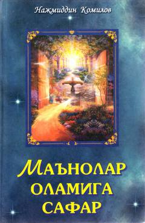

MOAlisher Navoiy g'azallarining falsafiy va badiiy jihatdan chuqur tahlili va sharhi.
Filologiya fanlari doktori Najmiddin Komilovning ushbu kitobi Alisher Navoiy g'azallarining sharhiga bag'ishlangan. Unda shoir ijodidagi falsafiy qarashlar, badiiy tasvir vositalari va aruz vazni qoidalari batafsil tushuntirilgan.